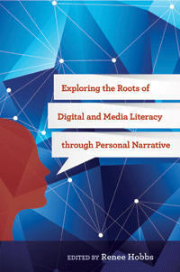

<body bgcolor="#FFFFFF" text="#000000" link="#0000FF" vlink="#CC0000" alink="#CC0000"><center><hr width="350" size="1" align="center" noshade>Leading scholars reveal insights into the core concepts and historical roots of digital and media literacy education<hr width="350" size="1" align="center" noshade><p><a href="https://cdcshoppingcart.uchicago.edu/Cart/ChicagoBook.aspx?ISBN=&&PRESS=temple" target="_top">Buy this book!</a> | <a href="https://cdcshoppingcart.uchicago.edu/Cart/Cart.aspx?PRESS=temple" target="_top">View Cart</a> | <a href="https://cdcshoppingcart.uchicago.edu/Cart/Cart.aspx?PRESS=temple" target="_top">Check Out</a></p><p></p></center><!--none//--><h1>Exploring the Roots of Digital and Media Literacy through Personal Narrative</h1>
<H2>_______________</H2>
<h3>Edited by Renee Hobbs</h3>
paper: $27.95, Jun 16<BR>EAN:&nbsp;978-1-4399-1158-7<BR><font color=#990033>Available</FONT><font size=-7><br>&nbsp;</font></p><p class="info">cloth: $89.50, Jun 16<BR>EAN:&nbsp;978-1-4399-1157-0<BR><font color=#990033>Available</FONT><font size=-7><br>&nbsp;</font></p><p class="info">e-book: $27.95, Jun 16<BR>EAN:&nbsp;978-1-4399-1159-4<BR><font color=#990033>Not Yet Published Preorder</FONT><font size=-7><br>&nbsp;</font></p></p></td></tr></table>
<BR> <p class="info">264 pp<BR> 5.5 x 8.25<BR> 1&nbsp;figures 1&nbsp;color&nbsp;illustrations<BR></P> <p class="info"><font size=-7>&nbsp;</font></p><p class="info">
</P><BLOCKQUOTE><p>
<i>"</i>Exploring the Roots of Digital and Media Literacy through Personal Narrative<i>&nbsp;offers a unique contribution in that it features more than a dozen distinguished authors discussing their views on the history of digital and media literacy from a range of different scholarly standpoints. Mixing well-recognized authors alongside some lesser-known and highly notable voices from a range of disciplines,&nbsp;Hobbs' book will tap the curiosity of readers who want to explore connections at the intersection of film/media studies, communication, and education. The individuals featured weave narratives of the integral scholars from previous generations whose work most influenced their own&nbsp;path. The collection offers a view on some of the earlier&nbsp;intellectual roots that ground&nbsp;the&nbsp;complex, multiply-defined constructs of&nbsp;digital literacy and media literacy.</i>"&#8212;<b>Rebecca Reynolds</b>, Assistant Professor of Library and Information Science in the School of Communication and Information at Rutgers University
<br />
<br></BLOCKQUOTE>
<p>
<i>Exploring the Roots of Digital and Media Literacy through Personal Narrative</i> provides a wide-ranging look at the origins, concepts, theories, and practices of the field. This unique, exciting collection of essays by a range of distinguished scholars and practitioners offers insights into the scholars and thinkers who fertilized the minds of&nbsp;those who helped shape the theory and practice of digital and media literacy education. <br>
<p>Each chapter describes an individual whom the author considers to be a type of "grandparent." By weaving together two sets of personal stories-that of the contributing author and that of the key ideas and life history of the historical figure under their scrutiny-major concepts of digital media and learning emerge.
<br>
<P CLASS="top"><A HREF="#top">BACK TO TOP</A></P>&nbsp;<h2>Excerpt</h2><p>
Read the Introduction (pdf)
<br>
<P CLASS="top"><A HREF="#top">BACK TO TOP</A></P>
<BR>&nbsp;
&nbsp;<P>
<h2>Contents</h2><P><p>
Introduction &#9632; Renee Hobbs</p>
<p>1 Historical Roots of Media Literacy &#9632; Renee Hobbs
<br />2 David Weinberger on Martin Heidegger &#9632; David Weinberger
<br />3 Lance Strate on Marshall McLuhan &#9632; Lance Strate
<br />4 Dana Polan on Roland Barthes &#9632; Dana Polan
<br />5 Cynthia Lewis on Mikhail Bakhtin &#9632; Cynthia Lewis
<br />6 Srividya Ramasubramanian on Gordon Allport &#9632; Srividya Ramasubramanian
<br />7 Michael RobbGrieco on Michel Foucault &#9632; Michael RobbGrieco
<br />8 Gianna Cappello on Theodor Adorno &#9632; Gianna Cappello
<br />9 Douglas Kellner on Herbert Marcuse &#9632; Douglas Kellner
<br />10 Henry Jenkins on John Fiske &#9632; Henry Jenkins
<br />11 Amy Petersen Jensen on Bertolt Brecht &#9632; Amy Petersen Jensen
<br />12 Donna E. Alvermann on Simone de Beauvoir &#9632; Donna E. Alvermann
<br />13 Jeremiah Dyehouse on John Dewey &#9632; Jeremiah Dyehouse
<br />14 Renee Hobbs on Jerome Bruner &#9632; Renee Hobbs
<br />15 Vanessa Domine on Neil Postman &#9632; Vanessa Domine
<br />16 Peter Gutierrez on Scott McCloud &#9632; Peter Gutierrez
<br />17 Susan Moeller on Roland Barthes &#9632; Susan Moeller</p>
<p>Epilogue &#9632; Renee Hobbs </p>
Contributors <br>
Index
</p></P>
<P CLASS="top"><A HREF="#top">BACK TO TOP</A></P>
</P><BR>&nbsp;
<H2>About the Author(s)</H2><p>
<b>Renee Hobbs</b> is Professor of Communication Studies at the Harrington School of Communication and Media, at the University of Rhode Island. She is the author of <i>Copyright Clarity: How Fair Use Supports Digital Learning </i>and <i>Reading the Media: Media Literacy in High School English.</i>
<br>
<P CLASS="top"><A HREF="#top">BACK TO TOP</A></P>
<p><h2>Subject Categories</h2><P><A HREF="/tempress/mass_media.html" TARGET="_top">Mass Media and Communications</a><BR><P><A HREF="/tempress/cultural.html" TARGET="_top">Cultural Studies</a><BR><P><A HREF="/tempress/education.html" TARGET="_top">Education</a></P></P>
</p>
<P>
</P>
<p align="center"><a href="https://cdcshoppingcart.uchicago.edu/Cart/ChicagoBook.aspx?ISBN=&&PRESS=temple" target="_top">Buy this book!</a> | <a href="https://cdcshoppingcart.uchicago.edu/Cart/Cart.aspx?PRESS=temple" target="_top">View Cart</a> | <a href="https://cdcshoppingcart.uchicago.edu/Cart/Cart.aspx?PRESS=temple" target="_top">Check Out</a></p><p><font face="Arial" size="1"><a href="copyright.html" onMouseOver="window.status='Web Copyright Policy';return true;" onMouseOut="window.status=''" title="Web Copyright Policy">&copy;</a> <a href="http://www.temple.edu" target="new" onMouseOver="window.status='Link to Temple University home page';return true;" onMouseOut="window.status=''" title="Link to Temple University home page">Temple University</a>. All Rights Reserved. http://www.temple.edu/tempress/titles/2329_reg.html</font></p>